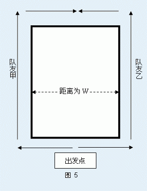

自从NOI的比赛加入了团体赛，SHOI的领队就发现培养学生之间的团队协作精神是十分重要的。所以，今年SHOI的领队就决定，在上海代表队选拔赛结束后，组织大家在大草坪上做一个团队游戏，培养选手之间的默契、协作。
现在Secsa“偷偷”地把这个小游戏的内容告诉你，也许你到时候可以赢得小游戏的冠军，获得一份特别的小礼品哦！
这是一个每两人为一队的、需要双人配合的游戏。游戏中会有一根绳子系在作为队友的两人身上，也就是说在整个游戏过程中，两人之间的距离不能超过这根绳子的长度。
游戏开始之前，大草坪上画上了一个简单多边形（边界不自交，但既可能是凸的也可能是凹的）。
同一队的两人可以自由的在多边形上选一点一同出发，但出发时他们是背对背的。整个游戏的过程中两人可以沿着多边形的边界向前走或者向后退，如果他们两人能够最终面对面地相遇，那么他们就胜利了。整个游戏过程中，反转方向是不允许的[1]。如图 5中所示，只要系在两人身上的绳子的长度不少于W，那么两人就可以沿箭头方向朝前走，并最终胜利。

显然，系在队友身上的绳子越短，想要获胜的难度越高。所以，你现在的任务就是根据草坪上画的多边形的形状计算出：能够完成游戏并胜利的最短的绳子的长度。
[1] 对于每一个简单多边形而言，都有两种方式可以沿着其边缘环绕一周，这两种环绕方式的方向是相反的，我们称其中一种为正方向，另一种为负方向。例如，就一个凸多边形而言，有顺时针和逆时针两种方向相反的环绕方法。这里所说的“反转方向是不允许的”是指：在整个游戏的过程中，作为队友的AB两人，A必须始终面朝着正方向，B必须始终朝着负方向，但AB两人在任意时刻都可以前进或者后退，或者其中一人前进另一人后退。